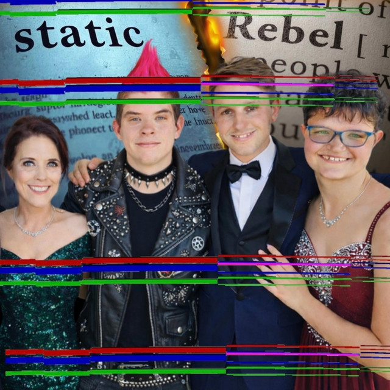
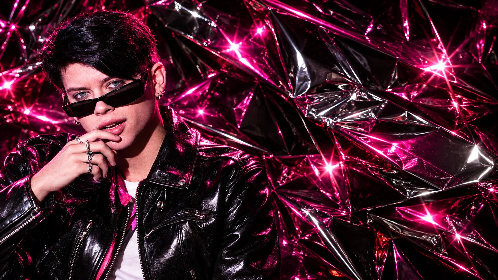

Handle with disaster
Scroll to discoverSingles & releases
Make some noise.

A name reclaimed
What held you back.
What sets you free.
Different. Unapologetic. Authentic.
J!NX is a transformation. A story rewritten.